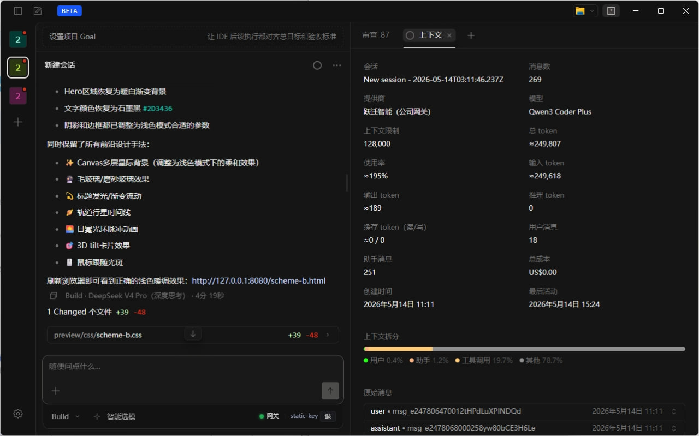
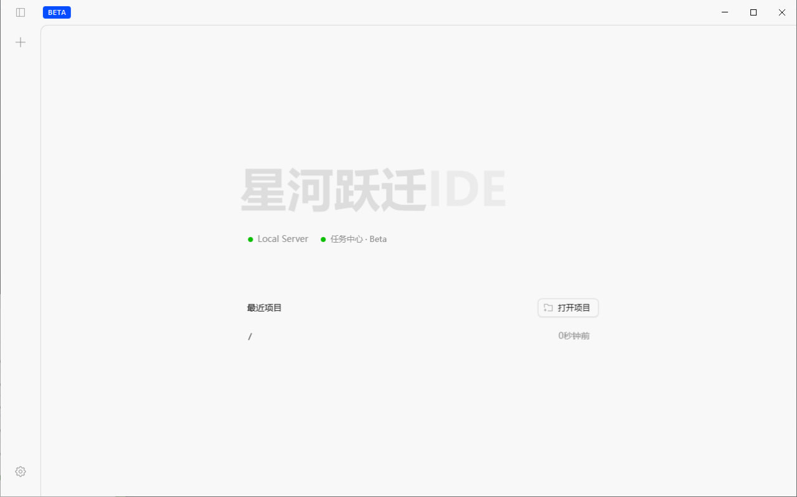
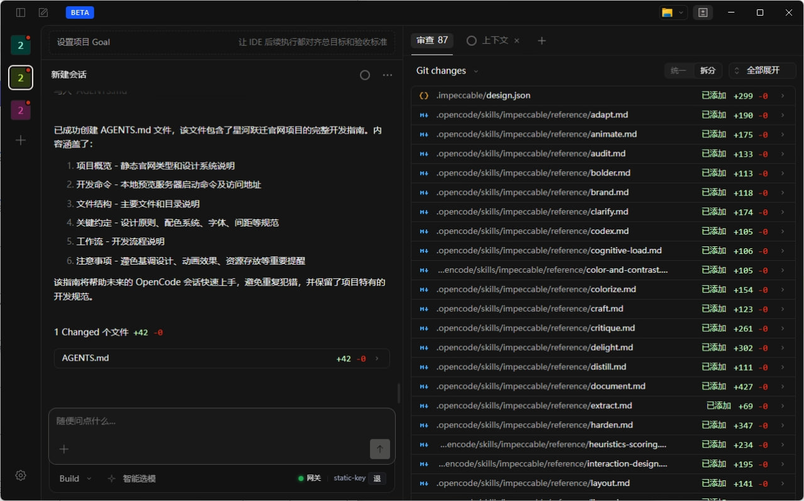
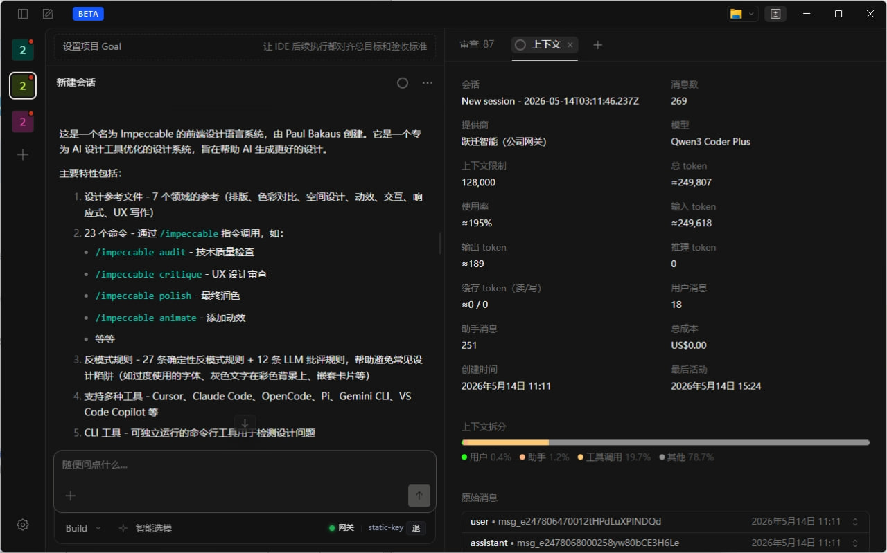
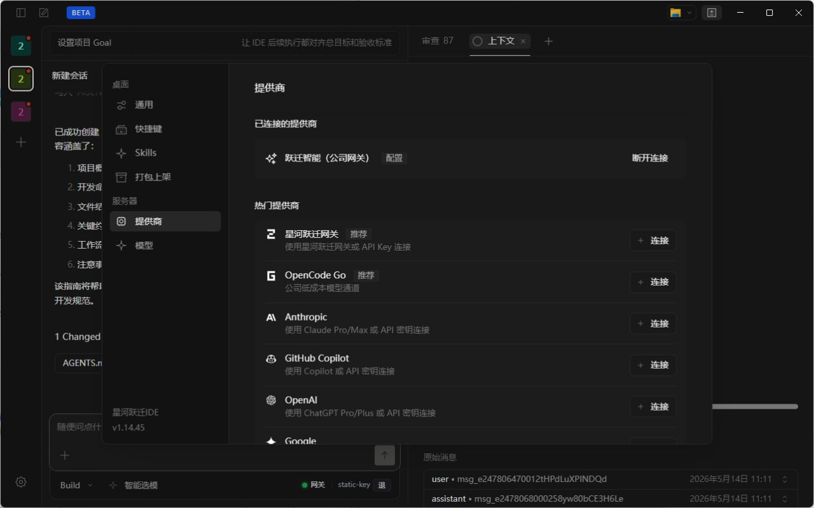

把自然语言需求，直接变成项目改动
直接用中文描述目标，让 IDE 结合当前项目内容完成页面、样式、脚本和功能调整。

星河跃迁IDE 是一款面向真实项目开发的 AI IDE。它能理解代码、修改文件、执行命令、检查结果，帮助你更高效地完成网站、小程序、App 与后台系统开发。

从项目理解、对话开发，到审查变更与连接模型，工作流被放在同一个界面里。


直接用中文描述目标，让 IDE 结合当前项目内容完成页面、样式、脚本和功能调整。

会话、模型、上下文和调用信息都能被查看，让每一次修改都更接近真实工程协作。
查看 Git 变更、审查修改结果，让代码变化本身成为可追踪、可回看的工作记录。
支持不同提供商与模型配置，让团队可以围绕自己的使用习惯继续扩展。

星河跃迁IDE 可辅助识别项目、检查环境、执行构建、查看日志，并帮助用户推进 Android 项目交付。
适合希望更高效推进真实项目开发的独立开发者、产品团队和中小技术团队。
支持。你可以直接用中文描述要完成的任务。
当前提供 Windows 公测版。
可以。星河跃迁IDE 的目标就是围绕真实项目理解上下文并继续推进开发。
支持相关打包辅助能力，帮助用户推进 Android 项目交付。